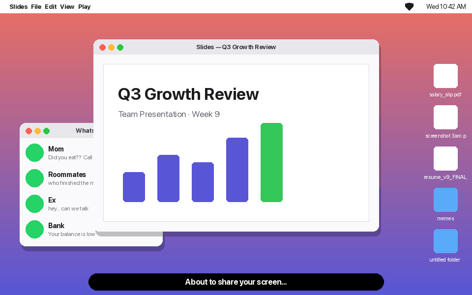
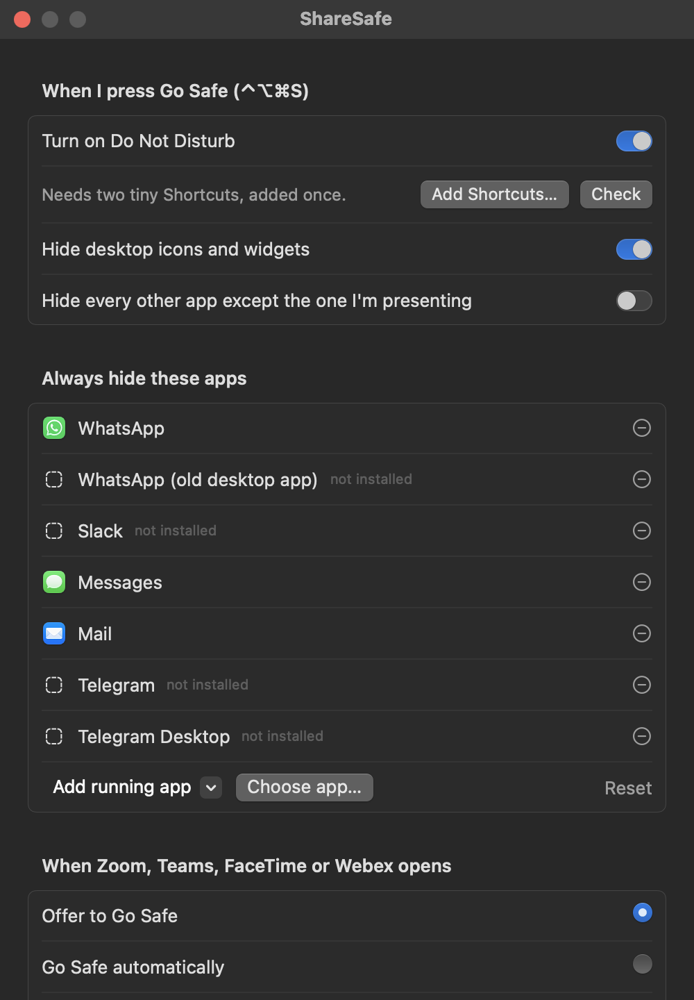
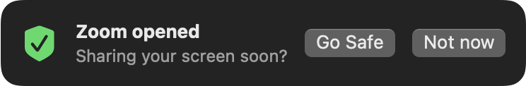
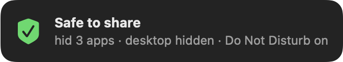
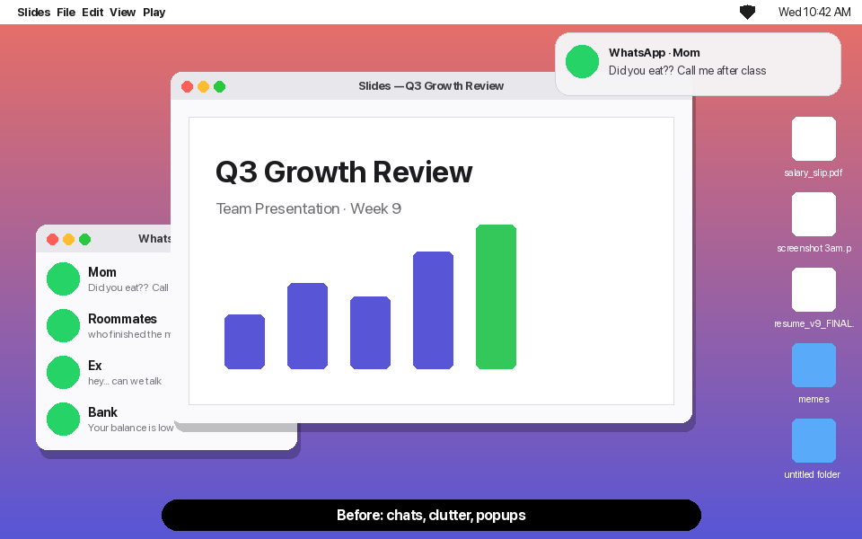
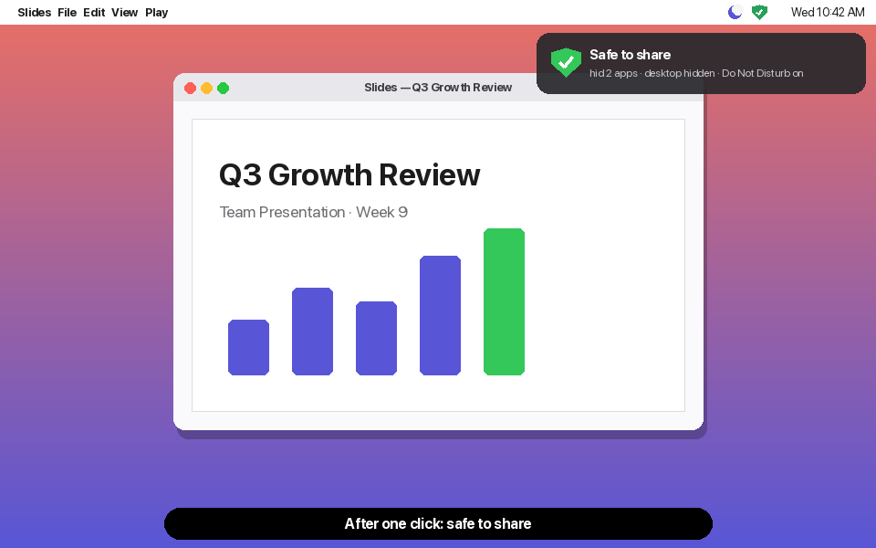

One click before you present: Do Not Disturb on, WhatsApp and Slack hidden, desktop icons gone. One click after: everything back exactly as it was.
7 days of everything free · macOS 13 Ventura or later · Apple Silicon & Intel

Share a window or screen in Zoom, Google Meet or Teams and everything still pops up: family chats, client DMs, that file called resume_v9_FINAL on your desktop.
The class presentation. Sixty classmates watching your slides when a family WhatsApp pops up mid-sentence.
The client call. A Slack DM about a different client slides in while you share your screen.
The forgotten toggle. You meant to turn on Do Not Disturb. You remember halfway through the demo.
ShareSafe lives in your menu bar as a small shield. No account, no setup wizard.
Click the shield or press ⌃ ⌥ ⌘ S before you share. Or let ShareSafe offer it the moment Zoom, Teams, FaceTime or Webex opens.
Notifications silenced, chat apps hidden, desktop icons and widgets covered by your wallpaper. The app you're presenting stays put.
Same shortcut again. Only the apps ShareSafe hid come back, the desktop reappears, and Do Not Disturb switches off.
Uses two tiny Apple Shortcuts you add with one click. No hacks, no admin rights.
WhatsApp, Slack, Messages, Mail and Telegram by default. Add any app you like.
Covers icons and widgets with your wallpaper. No Finder restart, nothing moved.
Keep only the app you're presenting and your meeting app on screen.
Offers to Go Safe when a call app opens, or does it automatically and restores when you quit the app.
Quit, crash or restart mid-call: ShareSafe puts things back on its next launch.





Try everything free for 7 days. Keep the basics forever. Pay once if it saves you even one awkward moment.
Secure checkout by Dodo Payments (cards, UPI and local methods). Your license key arrives by email and on the next page.
ShareSafe is signed but not notarized: notarization needs a $99/year Apple Developer account, and we kept the app $5 instead. The first time you open it:
You only do this once. Comfortable with Terminal? xattr -dr com.apple.quarantine /Applications/ShareSafe.app does the same thing.
Honest answer: macOS has no reliable public way to tell an app "Zoom is sharing your screen right now". So ShareSafe uses things that always work: the ⌃⌥⌘S hotkey, the menu bar shield, and reacting when Zoom, Teams, FaceTime or Webex opens (offer to Go Safe, or do it automatically). Google Meet runs in your browser, so use the hotkey for Meet.
None of the scary ones. No Accessibility, no Screen Recording, no Full Disk Access. Do Not Disturb works through two Apple Shortcuts ("ShareSafe Focus On" and "ShareSafe Focus Off") that you add with one click in Settings → Add Shortcuts. You can open them in the Shortcuts app and see exactly what they do: one "Set Focus" action each.
No. ShareSafe hides apps (like ⌘H) rather than closing or moving anything, and remembers exactly which ones it hid. Restore un-hides only those and removes the desktop cover. One caveat: macOS doesn't let apps read whether Do Not Disturb was already on, so Restore always switches it off. If you had it on before, turn it back on from Control Centre.
No analytics, no accounts. The only network request is the license check with Dodo Payments when you activate a key (and a quiet re-check about once a week).
Yes. If ShareSafe doesn't work for you within 14 days of buying, reply to your receipt email or open a support request and you'll get your $5 back.
macOS 13 Ventura or newer, on Apple Silicon and Intel. It's a 0.5 MB download and uses almost no memory.
sharesafe://safe, sharesafe://restore and sharesafe://toggle, so you can trigger it from Shortcuts, Raycast, Alfred or a Stream Deck.